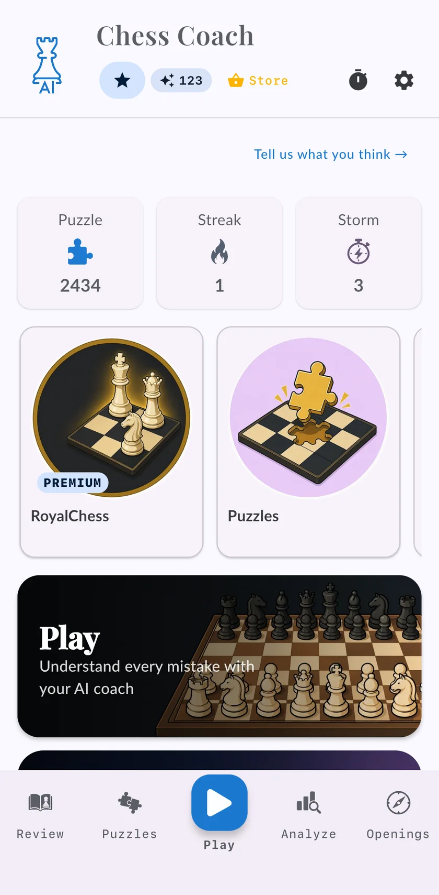

Aprender ajedrez desde cero, lección a lección
Un curso en el móvil que empieza por cómo se mueven las piezas y te lleva a más de 2000 de rating. Las lecciones mezclan teoría, puzzles, finales, aperturas y partidas contra bots. El primer curso es gratis.

Cuatro cursos, de las reglas a más de 2000
Los cursos siguen un único camino, y puedes empezar en el nivel que te corresponda. Dentro de cada curso las lecciones van en orden, así que siempre sabes qué toca después.
| Curso | Para | Qué aprendes | Lecciones |
|---|---|---|---|
| Primeros pasos | Quien empieza de cero | Cómo se mueven las piezas, el jaque y el mate, y qué es un plan | 29 |
| Principiante | Hasta 1000 | Táctica básica y las primeras aperturas que merece la pena saber | 44 |
| Intermedio | De 1000 a 1800 | Estrategia, estructuras de peones y los finales que deciden partidas | 91 |
| Avanzado | De 1500 a 2100 | Cálculo, decisiones y planes largos | 139 |
De qué están hechas las lecciones
Las lecciones mezclan varios tipos, y los cursos avanzados añaden más:
- Un poco de teoría, con la idea sobre un tablero, no un muro de texto.
- Puzzles sobre esa idea, para que la uses en seguida.
- Aperturas que aprender por el camino, poco a poco.
- Finales, a partir del curso Intermedio, jugados contra el motor.
- Partidas contra bots para poner la idea en práctica. Gana para llevarte las tres estrellas.
En los cursos Intermedio y Avanzado, algunas secciones se abren después de jugar una partida online contra otra persona.
Por qué un curso y no solo puzzles
Los puzzles entrenan lo que ya sabes. Cuando empiezas, lo difícil es saber qué aprender y en qué orden: los mates antes que las aperturas, los finales básicos antes que los planes largos. Un curso te pone ese orden delante y te deja ir a tu ritmo.
Qué es gratis
El curso Primeros pasos es gratis entero, igual que jugar contra los bots y el repaso con el motor de tus partidas. En los demás cursos puedes probar gratis las primeras lecciones; el resto es Premium.
Preguntas
¿Se puede aprender ajedrez solo con una app?
¿Cuánto se tarda en aprender ajedrez?
¿Sirve para niños?
¿Funciona en iPhone y en Android?
Sigue entrenando
Llévate el coach contigo
Empieza gratis en iPhone, iPad o Android. Sin anuncios, y sin suscripción para jugar, analizar o hacer el primer curso.
Inicia sesión y tus partidas, ratings y progreso te siguen al otro dispositivo.

La portada, en un iPhone. La misma app en Android y en iPad.